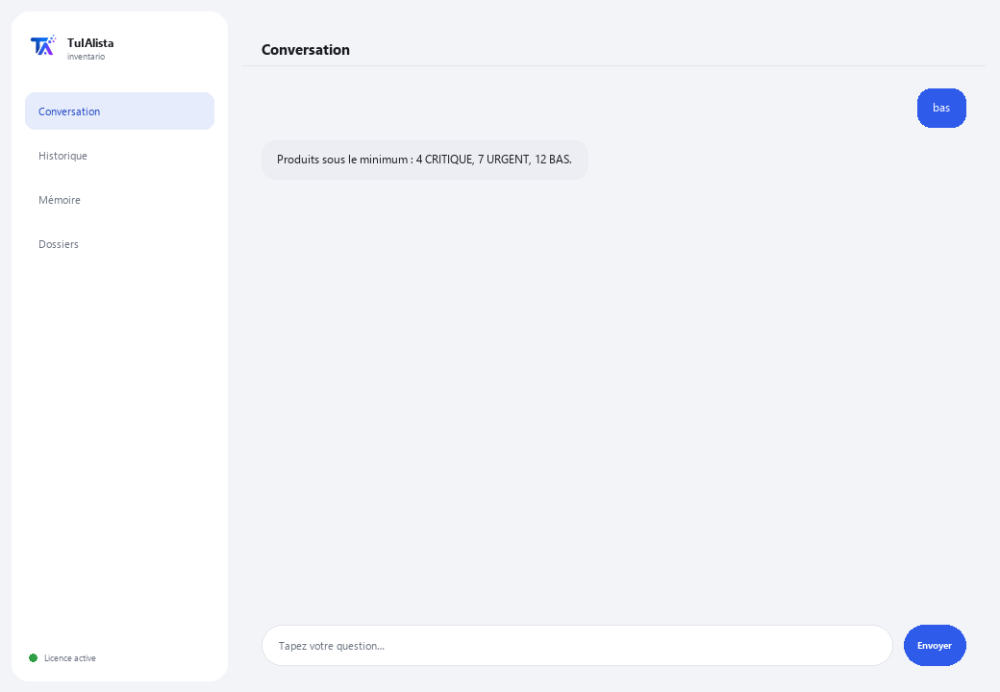

Agent d'inventaire
Détecte quoi réapprovisionner, combien vaut votre stock et où se trouve votre capital immobilisé — en quelques secondes.
Que résout-il et de quoi avez-vous besoin ?
Gérer un stock est un équilibre : s'il en manque, vous perdez des ventes ; s'il y en a trop, vous avez de l'argent immobilisé. Vérifier cela à la main dans des feuilles Excel est fastidieux et presque personne ne le fait à temps. Cet agent transforme vos fichiers d'inventaire en tableau de bord des achats et du capital.
- Vous avez besoin de : votre clé de licence (TIA-XXXX-XXXX-XXXX-XXXX) et du dossier contenant vos fichiers d'inventaire (Excel ou CSV). Ni Python ni connaissances techniques.
- Premier résultat en moins de 5 minutes : vous installez, activez, choisissez votre dossier et lancez bas pour voir quel produit est bientôt épuisé.
- Les données de votre entreprise ne quittent jamais votre ordinateur — l'analyse s'exécute localement.
soporte@tuialista.com ou visitez tuialista.com/soporte — nous répondons généralement le jour même.1 Ce que fait cet agent
Vous lui indiquez le dossier contenant vos fichiers d'inventaire et il :
- Les lit (Excel .xlsx et CSV), en reconnaissant automatiquement les colonnes (en français, espagnol ou anglais).
- Détecte les produits sous le minimum et leur urgence.
- Suggère combien réapprovisionner pour chaque produit (selon sa rotation ou une valeur par défaut).
- Calcule la valeur totale du stock, au coût et au prix de vente, par catégorie et fournisseur.
- Identifie le stock dormant (sans mouvement) qui immobilise du capital.
- Classe les produits par analyse ABC (où la valeur est concentrée).
- Détecte les excès de stock.
- Répond à vos questions : “qu'est-ce qu'il vaut mieux réapprovisionner en premier ?”
Résultat : vous savez quoi acheter, quoi libérer et où se trouve votre argent, en quelques secondes.
2 Installation (2 minutes)
Pour Windows. Pas besoin d'internet permanent ni de rien envoyer sur le cloud.
Téléchargez l'installateur depuis tuialista.com/descargar (agent Inventaire) et ouvrez-le. Il crée un raccourci sur votre bureau avec le logo — pas besoin de Python ni de terminal.
Double-cliquez sur la nouvelle icône. Collez votre clé de licence (reçue par e-mail à l'achat) et cliquez sur Activer. Une coche verte apparaît quand elle est valide.
Sélectionnez le dossier contenant vos fichiers d'inventaire et cliquez sur Commencer à utiliser l'agent. La prochaine fois, il démarre directement — il se souvient de votre clé et de votre dossier.
3 Comment l'utiliser
L'agent ouvre une fenêtre de discussion, comme une app de messagerie — pas un écran noir de programmeur. Vous écrivez votre commande ou votre question dans le champ de texte en bas, cliquez sur Envoyer (ou Entrée), et la réponse apparaît comme un message, exactement comme sur cette image réelle :

Les commandes suivantes sont les mots que vous pouvez écrire dans ce même champ de texte :
> bas [seuil]Produits avec un stock égal ou inférieur à leur minimum (ou au seuil indiqué), classés par urgence (CRITIQUE / URGENT / BAS) et avec les jours restants estimés s'il y a rotation. Ex. : bas 5.
> réapprovisionnerPour chaque produit bas, suggère combien commander (selon la rotation sur ~30 jours, ou une valeur par défaut) et estime le coût.
> valeurValeur totale au coût et au prix de vente, marge potentielle et répartition par catégorie et fournisseur.
> dormant [jours]Produits avec du stock mais sans mouvement depuis N jours (90 par défaut), classés par valeur immobilisée. Ex. : dormant 120.
> abcClassification A/B/C (Pareto) par valeur de stock : les “A” concentrent la majeure partie de la valeur et méritent plus d'attention.
> excèsProduits avec un stock très supérieur à leur minimum et le capital immobilisé dans cet excès.
> question libre ?Écrivez toute question en langage naturel, ex. : quels produits de la catégorie boissons sont bientôt épuisés ?
> quitterTermine la session (fonctionne aussi avec exit).
Vous voulez voir les 20 recettes complètes avec un exemple réel de chacune ? Consultez le Catalogue de recettes — un document à part vu sa longueur : catalogo_recetas.pdf à côté de ce manuel, ou la version interactive sur tuialista.com/guia/inventario/recetas.
4 Exemples d'usage courant
Les achats de la semaine
bas → réapprovisionner — vous voyez ce qui manque et combien commander, avec le coût estimé.
Libérer de l'argent immobilisé
dormant 90 → excès — vous détectez le capital immobilisé dans des produits sans mouvement ou en excès.
Concentrer votre attention
abc — vous savez quels produits “A” surveiller davantage car ils concentrent la valeur.
Une requête ponctuelle
quelle est la valeur totale de mon stock au coût ?
5 Questions fréquentes
Mes données sont-elles envoyées sur internet ?
Quels formats accepte-t-il ?
Dois-je nommer mes colonnes d'une façon exacte ?
Est-ce qu'il “prédit” vraiment quand réapprovisionner ?
Ai-je besoin de la colonne de rotation ou de dernière sortie ?
Dans quelle langue répond-il ?
Modifie-t-il mes fichiers ?
Puis-je changer le dossier de données ?
Les calculs sont-ils exacts ?
Peut-il lire plusieurs fichiers ?
6 Résolution de problèmes
Affiche “CSV/XLSX sans colonnes reconnues”
Un .xlsx ne se charge pas
Affiche “Licence invalide” ou demande de se reconnecter
“Aucun fournisseur d'IA configuré”
Aucune de ces solutions n'a résolu votre problème ? Écrivez-nous directement — nous serons ravis de l'examiner avec vous.
soporte@tuialista.com ou visitez tuialista.com/soporte — nous répondons généralement le jour même.7 Confidentialité
Les données de votre entreprise ne quittent jamais votre ordinateur.
- L'agent lit et analyse vos fichiers localement, sur votre propre appareil. Il ne les envoie à aucun serveur.
- Tous les calculs (stock bas, valeur, ABC, excès, stock dormant) se produisent sur votre machine.
- La seule chose qui transite par internet est : (1) une vérification que votre licence est active — qui n'inclut pas vos données —, et (2) lorsque vous posez une question libre, un résumé de l'inventaire pertinent est envoyé au moteur d'IA pour rédiger la réponse.